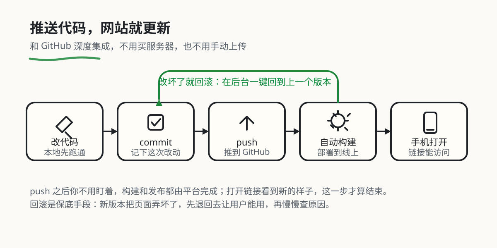

把网站发到网上（简单方式）：Vercel/Cloudflare/CloudBase 一键发布
本章目录 · 10 节
你可以把本页内容和项目代码一起发给 AI，让 AI 根据项目类型、免费额度和使用需求，帮你挑选合适的平台，并自动完成部署配置与服务集成。也可以直接告诉 AI：“请参考这份教程，优先选择适合当前项目的免费方案，帮我配置部署、连接前后端接口，并验证能否正常访问。”
什么叫"把网站发到网上"？ 也叫"上线"或"部署发布"。你在本地电脑写好的网站，只有你自己能打开；"发到网上"就是把它放到一台 24 小时开机的服务器上，让任何一个人在浏览器里输入网址就能访问到——就像你写了一篇 Word 文档只有自己电脑能看，发到公众号/博客后所有人都能看一样，只不过这次发上去的是一个完整的网站。
在本教程中，我们会介绍最简单的发站方式——不需要买服务器，不需要懂运维，连一下 GitHub 仓库点几下按钮就能把网站发到网上。我们会介绍 腾讯云 CloudBase、Vercel、Netlify、Cloudflare Pages 和 Render，并补充直接使用 Dify 官方云 的方法。
为什么用平台一键发布，而不自己搭服务器？
你可能想问：既然最终都要"放到服务器上"，为什么不自己买一台服务器来部署？答案是：平台帮你把麻烦事全包了。
如果手动部署，一个项目往往需要好几个步骤，每一步都可能踩坑。常见关键步骤包括：
- 服务器准备：你需要先购买云服务器（比如阿里云、腾讯云、或 AWS EC2），选择服务器所在地区（如上海、新加坡）、配置（CPU、内存、磁盘大小等），还要学会如何远程连接服务器（例如通过 SSH 工具登录）。

- 环境配置：Web 应用需要在特定"环境"中才能运行——例如运行 Node.js 项目必须先安装 Node.js；运行 Python 项目必须安装 Python 以及对应的第三方库。如果环境版本不匹配，程序就可能报错、无法启动。
- 上传资源：你需要把本地的代码和资源上传到服务器上，常用的方法包括 FTP 或 Git。如果项目体积比较大（比如包含视频文件），中途一旦断线，有时需要重新上传。

- 启动服务并测试：上传完成后，你还需要在服务器上执行命令启动应用，并测试"分配的网络地址是否能访问"。如果访问不了，有可能是服务器防火墙没有放行对应端口（比如你的应用监听 3000 端口，但该端口被防火墙拦截），也可能是程序本身有 Bug，这时就去翻服务器日志找原因。
可以把端口理解为区分同一台设备上不同应用的"房间号"，而 IP 则是这台设备的"门牌号"。IP 和端口合在一起（IP:port），就可以精确定位到某一个网络服务。
- 维护与更新：后续每次你修改代码，都要重新上传并重启服务。如果服务器宕机（例如断电、网络故障），还需要手动重启应用，有时还要额外配置"进程守护工具"，让程序在异常退出后自动拉起。
像 CloudBase、Vercel、Cloudflare Pages 这样的"低代码部署平台"，就是为了解决上述复杂问题而诞生的。它们会帮你自动完成"买服务器、配环境、上传代码、启动服务、监控运行"等步骤。你只需要把自己的代码仓库（比如 GitHub 或 GitLab）连接到平台，或者直接上传代码，它就会自动拉取代码、识别应用类型、配置对应的运行时环境，最后给你一个可以被任何人访问的公网地址。它甚至可以一键绑定你自己的域名。

接下来，我们会分别介绍这些平台的特点和使用方法，帮助你选择最适合自己的部署方案。
部署平台对比
| 平台 | 特点 | 适用场景 | 免费额度 |
|---|---|---|---|
| 腾讯云 CloudBase | 国内访问速度快，与微信生态深度整合 | 国内用户为主、需要微信小程序支持的项目 | 有免费额度 |
| Vercel | 前端框架支持好，与 GitHub 集成紧密 | React/Vue/Next.js 等现代前端项目 | 有免费额度 |
| Netlify | 功能全面，支持表单处理和身份验证，与 Git 集成好 | 需要表单处理、身份验证等高级功能的静态网站 | 有免费额度 |
| Cloudflare Pages | 支持本地上传和 Git 自动部署，提供 HTTPS 访问地址 | 静态网站、Vue / React 构建产物、小游戏 | 静态资源请求免费，构建和文件大小等有限制 |
| Render | 支持运行独立的 Node.js / Python 后端程序 | Express、Flask、FastAPI 等后端 API | 有免费 Web Service，闲置 15 分钟会休眠 |
| Dify 官方云 | 注册后直接使用知识库、Agent 和工作流 | 学习与分享 Dify 应用，无需先自部署 | 有 Sandbox 免费方案，模型与知识库等额度有限 |

1. 腾讯云 CloudBase
腾讯云 CloudBase（云开发）是腾讯云提供的一站式后端云服务，特别适合国内开发者使用。它的优势在于：
- 国内访问速度快：服务器位于国内，访问延迟低
- 微信生态整合：可以方便地对接微信小程序、公众号
- 一站式解决方案：提供静态网站托管、云函数、数据库、存储等全套服务
- 免费额度充足：个人开发者有充足的免费资源额度
使用 CloudBase 部署 Web 应用
步骤 1：注册并登录
访问 腾讯云 CloudBase 控制台，使用微信或 QQ 登录。
步骤 2：创建环境
点击"新建环境"，选择一个环境名称（如 my-web-app）。
⚠️ 注意：CloudBase 的免费体验版需要兑换码才能开通。你需要关注腾讯云 CloudBase 公众号，在公众号中输入"领取兑换码"获取免费体验版的兑换码，然后在创建环境时填写兑换码即可开通免费环境（免费试用期为 6 个月）。
步骤 3：开通静态网站托管
在环境管理页面，找到"静态网站托管"功能并开通。开通后你会获得一个默认的访问域名。
CloudBase 的静态网站托管提供多种部署方式：
- 本地项目上传：直接从本地上传构建好的静态文件（HTML、CSS、JS 等）
- 模板部署：使用预设模板快速创建项目，如 React Web 应用模板、Vue Web 应用模板
- Git 仓库部署：支持从 GitHub 等代码仓库自动拉取代码并部署
步骤 4：部署代码
在静态网站托管页面，CloudBase 提供三种部署方式：
方式一：本地项目部署（本地项目上传）
- 在控制台选择"本地项目部署"
- 直接上传构建好的静态文件（HTML、CSS、JS 等）
- 选择你本地构建好的项目文件夹（如
dist或build目录） - 等待上传完成即可访问
方式二：模板部署
- 使用预设模板快速创建项目
- 支持 React Web 应用模板、Vue Web 应用模板等
- 基于模板自动构建并部署
方式三：Git 仓库部署
- Git 个人仓库部署：绑定你的 GitHub 等个人代码仓库
- 公开仓库部署：支持从公开的 Git 仓库拉取代码
- 配置自动构建命令（如
npm run build） - 每次推送代码会自动重新部署
提示：也可以用 CLI 工具部署：
# 安装 CloudBase CLI npm install -g @cloudbase/cli # 登录 tcb login # 部署 tcb hosting deploy ./dist -e your-env-id
步骤 5：配置自定义域名（可选）
在静态网站托管设置中，可以绑定你自己的域名，并申请免费的 HTTPS 证书。
2. Vercel
Vercel 是全球最流行的前端部署平台之一，特别适合部署 React、Vue、Next.js 等现代前端框架项目。它的特点包括：
- 与 GitHub 深度集成：推送代码即自动部署
- 自动预览：每个 Pull Request 都会生成独立的预览链接
- 全球 CDN：网站自动分发到全球节点，访问速度快
- Serverless 函数：支持在项目中编写后端 API
⚠️ 注意：Vercel 在部分网络环境下访问可能不太稳定，国内用户建议优先考虑 CloudBase。
使用 Vercel 部署 Web 应用
步骤 1：注册账号
访问 Vercel 官网，使用 GitHub 账号登录。
步骤 2：导入项目
- 点击 "Add New Project"
- 选择你要部署的 GitHub 仓库
- 如果没有看到想要的仓库，点击 "Adjust GitHub App Permissions" 授权访问
步骤 3：配置构建设置
Vercel 会自动识别项目类型并配置构建命令：
| 框架 | 构建命令 | 输出目录 |
|---|---|---|
| React | npm run build |
build |
| Vue | npm run build |
dist |
| Next.js | next build |
- |
| 纯 HTML | - | 项目根目录 |
如果自动识别不正确，可以手动修改：
- Build Command: 构建命令，如
npm run build - Output Directory: 构建输出目录，如
dist或build - Install Command: 依赖安装命令，通常是
npm install
步骤 4：部署
点击 "Deploy" 按钮，等待构建完成。构建成功后，你会获得一个 xxx.vercel.app 的域名。
步骤 5：自定义域名（可选）
在项目设置中的 "Domains" 页面，可以添加你自己的域名。Vercel 会自动配置 HTTPS。
3. Netlify
Netlify 是另一个非常流行的前端部署平台，与 Vercel 类似，特别适合部署静态网站和单页应用（SPA）。它的特点包括：
- 功能全面：除了静态网站托管，还支持表单处理、身份验证、边缘函数等高级功能
- 与 Git 深度集成：支持 GitHub、GitLab、Bitbucket，推送代码自动部署
- 分支预览：每个分支都会自动生成独立的预览链接
- 全球 CDN：网站自动分发到全球节点，访问速度快
- 表单处理：无需后端代码即可处理网站表单提交
- 身份验证：内置用户身份验证功能，可快速实现登录/注册
⚠️ 注意：Netlify 的国内访问速度可能不如 CloudBase，建议主要面向海外用户的项目使用。
使用 Netlify 部署 Web 应用
步骤 1：注册账号
访问 Netlify 官网，点击 "Sign up" 注册。你可以使用 GitHub、GitLab、Bitbucket 或邮箱注册。
步骤 2：导入项目
- 登录后点击 "Add new site" → "Import an existing project"
- 选择你的代码托管平台（如 GitHub）
- 授权 Netlify 访问你的仓库
- 从列表中选择你要部署的仓库
步骤 3：配置构建设置
Netlify 会自动识别常见的前端框架并配置构建设置：
| 框架 | 构建命令 | 发布目录 |
|---|---|---|
| React | npm run build |
build |
| Vue | npm run build |
dist |
| Angular | ng build |
dist/<project-name> |
| Next.js | next build |
out |
| 纯 HTML | - | .（项目根目录） |
如果自动识别不正确，可以手动配置：
- Build command: 构建命令，如
npm run build - Publish directory: 构建输出目录，如
dist或build
步骤 4：部署
点击 "Deploy site" 按钮，等待构建完成。构建成功后，你会获得一个 xxx.netlify.app 的域名，任何人都可以通过这个地址访问你的网站。
步骤 5：配置自定义域名（可选）
- 进入站点设置，点击 "Domain management"
- 点击 "Add custom domain"
- 输入你的域名并按照提示配置 DNS 记录
- Netlify 会自动申请并配置 HTTPS 证书
特色功能
1. 表单处理
Netlify 提供了一个非常方便的功能：无需后端代码即可处理表单提交。
只需在 HTML 表单中添加 netlify 属性：
<form name="contact" netlify>
<p>
<label>姓名: <input type="text" name="name" /></label>
</p>
<p>
<label>邮箱: <input type="email" name="email" /></label>
</p>
<p>
<label>留言: <textarea name="message"></textarea></label>
</p>
<p>
<button type="submit">发送</button>
</p>
</form>
部署后，表单提交的数据会自动发送到 Netlify 后台，你可以在 "Forms" 页面查看所有提交记录，也可以设置邮件通知或将数据转发到其他服务。
2. Netlify Functions（边缘函数）
Netlify 支持部署无服务器函数（Serverless Functions），让你可以在不搭建完整后端服务器的情况下，实现简单的 API 接口。你可以使用 JavaScript 或 TypeScript 编写函数，部署后会自动获得一个可访问的 URL。
例如，创建一个 hello.js 文件：
exports.handler = async (event, context) => {
return {
statusCode: 200,
body: JSON.stringify({ message: "Hello from Netlify!" })
};
};
部署后，你可以通过 https://你的域名/.netlify/functions/hello 访问这个函数。
3. 本地开发支持
Netlify 提供了 CLI 工具，方便你在本地开发和测试：
# 安装 Netlify CLI
npm install -g netlify-cli
# 登录账号
netlify login
# 本地启动开发服务器
netlify dev
# 本地测试函数
netlify functions:serve
使用 CLI 工具可以在本地模拟 Netlify 环境，包括表单提交、函数调用等功能，部署前先本地跑一遍。
4. Cloudflare Pages
Cloudflare Pages 是一个用于发布网页的平台。它特别适合纯 HTML 网页、Vue / React 项目和文档网站，优点包括：
- 本地文件上传：把已经生成的网页文件上传后，就能得到访问地址
- Git 自动部署：连接 GitHub 或 GitLab 后，推送代码会自动构建和更新网站
- 自动 HTTPS：平台会提供可公开访问的
pages.dev地址，也支持自定义域名 - 有免费方案：静态资源请求免费，构建次数和文件大小等仍有上限；动态函数另按 Workers 规则计算
使用 Cloudflare Pages 与 Trae 部署贪吃蛇游戏
在本教程的下一个部分，我们会实际发布一个网页游戏。我们先用 Trae 生成一个贪吃蛇小游戏，再把它部署到 Cloudflare Pages，并取得一个可公开访问的链接，让其他人也能打开游戏。
第一步，是在本地使用 Trae 创建一个贪吃蛇项目。
使用 HTML 框架实现

对于 Trae 来说，生成一个基于 HTML 的贪吃蛇网页游戏非常简单。游戏生成后，我们需要找到包含 index.html、CSS、JavaScript 等文件的文件夹。可以先让 Trae 检查：这个文件夹是否包含运行游戏所需的全部资源，是否还依赖只在本机存在的文件路径。
接下来，访问 Cloudflare 控制台，注册并登录。在左侧进入 Workers & Pages，创建应用时选择 Pages 的文件上传入口，界面可能显示为 Get started 或 Drag and drop your files。
这里有两种方式：
- 直接上传（Direct Upload）：适合现在这个已经在本地生成好的 HTML 小游戏。
- 连接 Git（Git integration）：适合后续持续修改代码，希望每次推送后自动更新网站的项目。
这次先选择直接上传。输入项目名称，把包含 index.html 的文件夹拖入上传区域，再点击部署。这里上传的是网页文件，不是 node_modules，也不是一个需要运行开发服务器才能访问的完整源码目录。
部署完成后，Cloudflare 会给出一个类似 https://项目名.pages.dev 的访问地址。打开这个地址，测试游戏能否开始、按键能否控制、图片和样式能否正常加载。以后更新游戏时，修改代码，再创建一次新部署并上传更新后的文件即可。
直接上传与 Git 集成是两种项目创建方式。直接上传的 Pages 项目不能直接切换成 Git 集成；需要自动发布时，可以另建一个连接 Git 的项目。具体入口见 Cloudflare 官方上传指南。
使用 React 框架实现
前面我们学习了如何部署基于 HTML 的 Web 应用。接下来，我们再尝试部署一个目前更常用的前端框架：React 应用。相比纯 HTML，React 通过组件化的方式组织页面结构，能够帮助我们管理更复杂的交互界面。

重构为 React 架构
在 Trae 中，可以向 Agent 说明：“帮我把这份代码重构成 React 架构，使用 Vite 构建，并保留现有的游戏功能。”

重构完成后，先在本地运行并测试。然后让 Trae 执行构建命令：
npm install
npm run build
Vite 项目通常会生成一个 dist 文件夹。打开这个文件夹，可以看到 index.html 和经过构建的脚本、样式等文件。现在需要上传到 Cloudflare Pages 的是 dist 里面的构建产物，不是 React 源码目录。
也可以直接把下面的要求发给 Trae：
请检查这个 React 项目能否部署到 Cloudflare Pages：
1. 确认使用的构建工具、构建命令和输出目录，不要只根据 React 这个名字猜测。
2. 在本地执行构建，修复构建报错。
3. 检查图片、脚本和页面路由，避免依赖本机绝对路径。
4. 告诉我应该上传哪个文件夹。如果使用 Git 部署，列出需要填写的构建设置。
从 GitHub 自动部署
如果代码已经上传到 GitHub，可以在 Pages 中选择连接 Git 仓库，授权后选择项目和生产分支，例如 main。
首先设置项目名称和分支。下面的界面图来自 Cloudflare 官方 Git 集成指南，截图中的示例项目名称不需要照抄。

接下来填写构建设置。Vite 创建的 React / Vue 项目通常使用：
| 设置项 | 本例填写内容 | 含义 |
|---|---|---|
| Framework preset | 按实际框架选择 | 帮助平台识别项目 |
| Build command | npm run build |
安装依赖后执行的构建命令 |
| Build output directory | dist |
平台对外发布的文件目录 |
| Root directory | 项目所在目录 | 如果代码就在仓库根目录，使用默认设置 |

配图来自官方指南的示例项目，可能显示其他框架和输出目录；本例填写上表中的 Vite 设置。旧的 Create React App 通常输出
build，不能把所有 React 项目都当作dist。
保存并部署后，平台会安装依赖、构建并发布网站。构建失败时，先看日志里最早出现的错误，再让 AI 根据错误信息修改代码或配置。

部署成功后，在项目页面取得公开访问地址。之后推送到所选生产分支，就会触发一次新的部署。
如果页面空白、图片或脚本返回 404，优先检查构建输出目录，以及 Vite 的 base 配置。原本为 GitHub Pages 仓库子路径配置的 /项目名/，不一定适合独立域名根目录。
本地监听端口与线上静态网站有什么区别？
在 Trae 的本地预览里，可能会看到 localhost:3000 或 localhost:5173。这表示我们通过本机开发服务器查看网页。React 本身并不规定端口，具体数字由开发工具和项目配置决定。
在计算机网络中，端口可以理解为一个“逻辑通信端点”，用来区分同一台设备上运行的不同网络服务。简单类比的话，如果 IP 地址好比一个“门牌号”，端口号就像这栋楼里不同房间的“房间号”——每个房间对应一个服务。
端口号用 16 位整型表示，取值范围是 0 到 65535。
“监听端口号”指的是某个程序主动打开并等待请求的端口。假设电脑是一栋写字楼，开发服务器在 3000 号房间接收请求，操作系统就会把发送到这个端口的请求交给它。
我们平时访问网站时，通常不需要手动添加端口，因为浏览器访问 HTTP、HTTPS 时分别默认使用 80、443。把构建产物上传到 Cloudflare Pages 后，网页文件由平台提供访问服务，不需要把本地开发服务器的端口改成某个固定数字。
如果项目除了网页，还需要一直运行 Node.js / Python 后端，就不能只上传静态产物。下面我们继续介绍这种情况。
5. Render
Render 可以运行独立的后端程序。比如前端发来一条聊天消息，后端需要读取 API Key、请求模型并返回结果，这部分程序可以部署在 Render，而网页仍然放在 Cloudflare Pages、Vercel 等平台。
它支持连接 Git 仓库、配置启动命令和环境变量，并为服务提供 HTTPS 地址。免费 Web Service 适合学习和演示，但连续 15 分钟没有入站流量后会休眠，下一次访问需要等待唤醒。
使用 Render 部署后端 API
步骤 1：准备能够启动的后端项目
如果已经有 Express、Flask 或 FastAPI 项目，先让 Trae 检查依赖文件、启动命令和监听地址。以 Node.js / Express 为例，可以在一个新的练习文件夹中执行：
npm init -y
npm install express
npm pkg set type=module
npm pkg set scripts.start="node server.js"
创建 server.js：
import express from 'express'
const app = express()
app.get('/health', (req, res) => {
res.json({ status: 'ok' })
})
const port = Number(process.env.PORT || 3000)
app.listen(port, '0.0.0.0', () => {
console.log(`Server listening on port ${port}`)
})
先运行 npm start，再打开 http://localhost:3000/health。看到 {"status":"ok"}，说明程序已经能够响应请求。
这里的 process.env.PORT 用来读取 Render 提供的端口。监听地址使用 0.0.0.0，使平台能够把请求交给程序。不要把线上端口固定为本地开发时的数字，也不要只监听 127.0.0.1。
把 server.js、package.json、package-lock.json 上传到 GitHub。node_modules 和保存真实密钥的 .env 应加入 .gitignore，不要上传。
步骤 2：连接仓库
访问 Render 控制台，注册并登录。点击右上角的 New，选择 Web Service。

选择 Git Provider，连接 GitHub，并授权需要部署的仓库。授权后，在仓库列表中找到项目并点击连接。

以上界面图来自 Render 官方首次部署指南。账户中显示的仓库名称会不同，以自己的项目为准。
步骤 3：配置构建与启动命令
给服务取一个名称，选择区域、分支和语言。本例选择 Node，填写：
| 设置项 | 本例填写内容 |
|---|---|
| Root Directory | 代码在仓库根目录时留空；如果在 server 等子目录，则填写该目录 |
| Build Command | npm ci，本例已经包含 package-lock.json |
| Start Command | npm start |
| Instance Type / Compute | Free |
TypeScript 项目通常还需要编译；Python 项目则需要填写自己的依赖安装与生产启动命令。这些设置应根据实际代码确定，不能直接照抄 Node 示例。
选择实例时，确认选中的是 Free。后续如果另外添加数据库或其他服务，也要分别检查它们的套餐。

步骤 4：配置环境变量并部署
如果后端要调用 Dify 或模型服务，在 Environment 中填写服务端需要的环境变量，例如 DIFY_API_KEY。这些变量由后端读取，不放进前端代码；VITE_、NEXT_PUBLIC_ 等公开变量也不适合保存密钥。
点击创建 Web Service 后，Render 会开始构建。打开 Deploys / Logs 查看依赖安装和程序启动过程。

步骤 5：取得地址并测试接口
当服务状态变为 Live，在服务页面找到 onrender.com 地址。

本例需要访问的是 https://服务名.onrender.com/health，而不是只打开根路径。看到和本地相同的 JSON，说明部署已经成功。
接下来，把前端接口地址改成自己的 Render 域名。如果前后端不在同一个域名，后端还需要为实际前端来源配置 CORS，并处理浏览器的 OPTIONS 预检请求。
免费服务的存储限制：免费 Web Service 不能挂载持久化磁盘，本地上传文件或 SQLite 数据不能当作长期存储。免费 Render Postgres 在创建 30 天后到期；需要长期保存数据时，按数据库课程选择合适的持久化方案。当前规则见 Render 免费服务说明。
6. Dify 官方云
在之前的课程中，我们已经简单接触过 Dify。学习知识库、Agent 和工作流时，可以直接使用 Dify 官方云，不需要先买服务器、找模板或等待多个服务启动。
使用 Dify 官方云创建应用
步骤 1：注册并进入工作区
打开 Dify 官方云，注册并登录，进入自己的工作区。学习阶段可以先使用 Sandbox 免费方案。免费托管有应用、知识库、文档和消息等额度限制，具体以 当前价格页 为准。
进入 Studio 后，可以看到应用列表以及创建入口。下面复用本课程 Dify 章节的操作截图，不同版本的布局可能稍有变化。

这里的 Create from Blank 用于从空白创建应用，Create from Template 用于使用模板，Import DSL file 用于导入已有工作流。它们创建的是 Dify 里的应用，不是另起一台云服务器。
步骤 2：创建一个 Chatbot
点击 Create from Blank，选择 Chatbot，填写应用名称和描述，再点击创建。

如果创建入口提示应用数量已到上限，先检查当前工作区额度，而不是反复重新部署。模型供应商也需要有可用模型和额度；使用自己的模型 API Key 时，费用按照模型供应商规则计算。
知识库上传、检索测试、Agent 和工作流的具体配置，继续参考 Dify 入门与知识库集成。
步骤 3：测试并分享应用
先在应用的预览区域完成一次对话，确认模型能回答，知识库能检索到预期资料。再打开右上角 Publish，发布当前配置，并通过 Run App 打开应用页面。

复制实际的 WebApp 地址，用另一个浏览器窗口测试应用的访问设置。需要登录才能访问的应用，应按当前设置完成登录，不要把自己的 Studio 管理地址当成分享地址。
将 Dify 接到自己的网页
如果希望使用自己制作的聊天界面，可以在应用 API 文档中取得调用地址和密钥。Dify Cloud 的 API 基础地址为 https://api.dify.ai/v1，自部署则使用实例自己的 API 地址。
浏览器先请求自己的后端，由后端读取 DIFY_API_KEY，再调用 Dify。后端可以使用前面介绍的 Render。不要把 Dify 应用密钥直接放进前端源码或浏览器请求里。
什么时候再考虑自部署？
需要控制 Dify 实例、插件或运行环境时，可以按 Dify 官方 Docker Compose 指南 部署到自己的电脑或云服务器。当前最低硬件要求为 2 核 CPU、4 GiB 内存，具体需求还取决于版本和使用量。
开源软件可以自行部署，不代表服务器、存储、流量和模型调用都免费。自部署作为后续进阶路径，不再作为本节使用 Dify 的必做前置步骤。
⚠️ 如何停止和删除项目
实验结束后，需要分别检查网站、后端和数据库。暂停一个网页服务，不代表相关数据库、磁盘或其他资源也已经停止计费。
Cloudflare Pages
打开项目的 Settings，在删除项目入口按提示确认。需要保留代码时，先确认源码已保存在 Git 仓库；绑定自定义域名的项目，也要按平台要求清理域名记录。可以在 官方项目管理说明 中核对当前入口。
Render
在服务的 Settings 中找到暂停或删除入口，按控制台提示操作。删除服务前先备份需要的数据；单独创建的数据库和其他资源也需要分别检查。
Dify 官方云
学习完成后，可以在应用设置中删除不再使用的应用；需要复用的工作流先导出 DSL。删除应用不等于注销账号或取消已订阅的付费套餐，使用付费方案时还要单独检查 Billing。
总结
在本教程中，我们介绍了几种可用的发布方式：
- 腾讯云 CloudBase：适合结合腾讯云生态发布网站或后端
- Vercel：适合现代前端框架和 Next.js 项目，与 GitHub 集成紧密
- Netlify：适合静态网站与 Git 自动发布，也提供表单和函数等功能
- Cloudflare Pages：适合静态网页、Vue / React 构建产物和小游戏
- Render：适合独立后端，免费实例有休眠与存储限制
选择哪个平台取决于项目需要什么。纯网页先选择静态托管，独立后端选择能运行该程序的服务，学习 Dify 则可以直接从官方云开始。
无论选择哪个平台，部署的核心流程都是相似的：准备代码 → 选择平台 → 配置构建设置 → 部署上线。完成后，再用实际访问地址验证页面和接口是否能够正常工作。